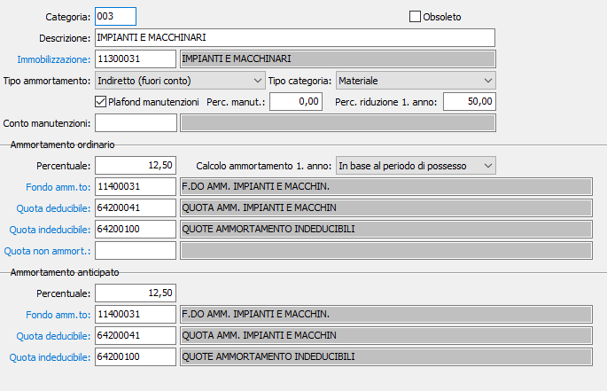

Categorie fiscali
La tabella consente di creare le categorie fiscali di ammortamento utilizzate dall’azienda e, soprattutto, di indicare per ciascuna categoria i codici dei sottoconti che vengono utilizzati per i movimenti contabili relativi alla gestione dei cespiti e per la generazione automatica delle scritture di ammortamento. Ne consegue che la compilazione di questa tabella suppone la preliminare esistenza di un piano dei conti.
Le categorie fiscali, previste dalla normativa fiscale, consentono di raggruppare i vari cespiti in categorie omogenee che vengono utilizzate dal programma sia per la stampa delle Simulazioni di ammortamento (vengono evidenziati i valori di ammortamento totalizzati per categoria) sia per la generazione delle scritture contabili.

CATEGORIA: codice alfanumerico di tre caratteri a libera scelta dell'utente che identifica la categoria. Sul campo sono attive le funzioni di ricerca (F9).
DESCRIZIONE: campo alfanumerico di 50 caratteri per inserire la descrizione della categoria.
IMMOBILIZZAZIONE: codice alfanumerico di 8 caratteri, presente in anagrafica sottoconti, del sottoconto al quale va imputato il costo dei cespiti appartenenti alla categoria. Sul campo sono attive le funzioni di ricerca (F9) ed accesso interattivo alla tabella collegata (CTRL+W).
TIPO AMMORTAMENTO: flag per indicare il tipo di ammortamento desiderato. Valori possibili:
indiretto (ammortamento fuori conto)
diretto (ammortamento in conto)
TIPO CATEGORIA: flag per indicare la tipologia di appartenenza della categoria. Valori possibili:
materiale
immateriale
PLAFOND MANUTENZIONI: flag per indicare se i cespiti appartenenti alla categoria concorrono o meno alla determinazione della base di calcolo delle manutenzioni.
PERCENTUALE MANUTENZIONE: la percentuale di manutenzione viene utilizzata, se valorizzata, al posto di quella già prevista a livello di configurazione Cespiti nel prospetto manutenzione.
PERCENTUALE RIDUZIONE PRIMO ANNO: indicare la percentuale di riduzione da applicare alla percentuale di ammortamento fiscale per il primo anno di ammortamento.
CONTO MANUTENZIONI: codice del piano dei conti relativo alla manutenzione. Sul campo sono attive le funzioni di ricerca (F9).
PERCENTUALE AMMORTAMENTO ORDINARIO: indicare la percentuale di ammortamento ordinario della categoria.
CALCOLO AMMORTAMENTO PRIMO ANNO: Definisce se il calcolo dell'ammortamento ai fini civilistici per il primo anno deve essere ridotto in base al periodo di effettivo utilizzo (quindi dalla data di inizio ammortamento alla data di fine esercizio) oppure applicando percentuale di ammortamento specificata, abbattuta della percentuale di riduzione indicata.
FONDO AMMORTAMENTO ORDINARIO: codice alfanumerico di 8 caratteri, presente in piano dei conti, relativo al sottoconto al quale vanno imputate le quote di ammortamento ordinario dei cespiti appartenenti alla categoria. Sul campo sono attive le funzioni di ricerca (F9) ed accesso interattivo alla tabella collegata (CTRL+W).
QUOTA DEDUCIBILE AMMORTAMENTO ORDINARIO: codice alfanumerico di 8 caratteri, presente nel piano dei conti, relativo al sottoconto al quale vanno imputate le quote deducibili di ammortamento ordinario dei cespiti appartenenti alla categoria. Sul campo sono attive le funzioni di ricerca (F9) ed accesso interattivo alla tabella collegata (CTRL+W).
QUOTA INDEDUCIBILE AMMORTAMENTO ORDINARIO: codice alfanumerico di 8 caratteri, presente nel piano dei conti, relativo al sottoconto al quale vanno imputate le quote indeducibile di ammortamento ordinario dei cespiti appartenenti alla categoria. Sul campo sono attive le funzioni di ricerca (F9) ed accesso interattivo alla tabella collegata (CTRL+W).
QUOTA NON AMMORTIZZABILE: codice alfanumerico di 8 caratteri, presente nel piano dei conti, relativo al sottoconto al quale vanno imputate gli importi non ammortizzabili dei beni appartenenti alla categoria. Sul campo sono attive le funzioni di ricerca (F9) ed accesso interattivo alla tabella collegata (CTRL+W).
PERCENTUALE AMMORTAMENTO ANTICIPATO: indicare la percentuale di ammortamento anticipato della categoria.
FONDO AMMORTAMENTO ANTICIPATO: codice alfanumerico di 8 caratteri, presente in piano dei conti, relativo al sottoconto al quale vanno imputate le quote di ammortamento anticipato dei cespiti appartenenti alla categoria. Sul campo sono attive le funzioni di ricerca (F9) ed accesso interattivo alla tabella collegata (CTRL+W).
QUOTA DEDUCIBILE AMMORTAMENTO ANTICIPATO: codice alfanumerico di 8 caratteri, presente nel piano dei conti, relativo al sottoconto al quale vanno imputate le quote deducibili di ammortamento anticipato dei cespiti appartenenti alla categoria. Sul campo sono attive le funzioni di ricerca (F9) ed accesso interattivo alla tabella collegata (CTRL+W).
QUOTA INDEDUCIBILE AMMORTAMENTO ANTICIPATO: codice alfanumerico di 8 caratteri, presente nel piano dei conti, relativo al sottoconto al quale vanno imputate le quote indeducibile di ammortamento anticipato dei cespiti appartenenti alla categoria. Sul campo sono attive le funzioni di ricerca (F9) ed accesso interattivo alla tabella collegata (CTRL+W).
OBSOLETO: flag attivabile dall’utente per inibire il possibile utilizzo dell’elemento di tabella in esame nelle successive transazioni.